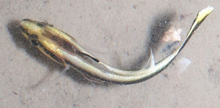
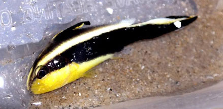
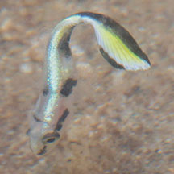

|
|
| fishes text index | photo index |
| Phylum Chordata > Subphylum Vertebrate > fishes > Family Haemulidae |
| Painted
sweetlips Diagramma pictum Family Haemulidae updated Sep 2020 Where seen? The stripy yellow and black juveniles are sometimes seen on some of our shores. Juveniles are seen in weedy areas. Adults are seen on sandy and silty bottoms near reefs. Features: Juveniles about 10cm. Slender long body yellow with black stripe through the eye across the body and the tail. And a black stripe above including the dorsal fin. Adults to 90cm, uniformly silvery grey. |
 Changi, Apr 12 |
 Juvenile. Changi, Apr 12 |
| Wiggly swimmer: Like some other young sweetlips
species, the juvenile Painted sweetlips typically
swims by 'wagging' its large tails resulting in a twisting motion. What does it eat? It eats small bottom-dwelling animals and fishes. |
| Painted sweetlips on Singapore shores |
On wildsingapore
flickr
|
| Other sightings on Singapore shores |
 Changi, Nov 16 Photo shared by Abel Yeo on facebook. |
 Pulau Semakau, Oct 18 Photo shared by Marcus Ng on facebook. |
Links
|